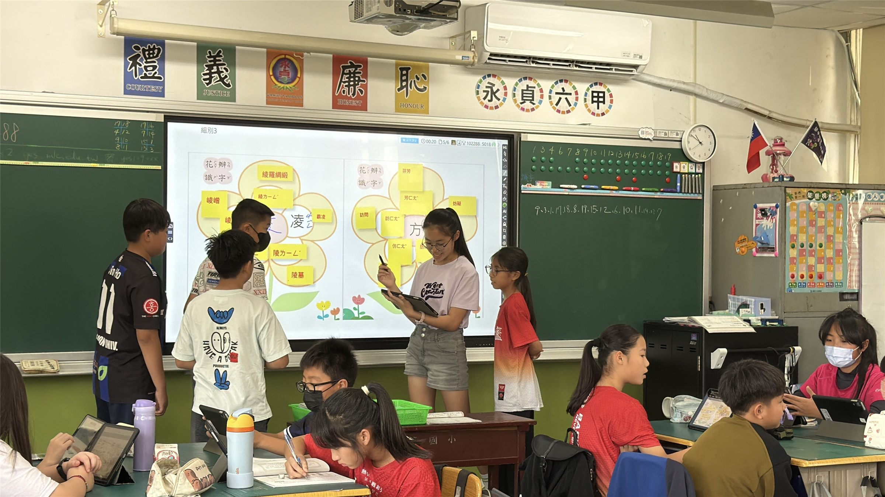
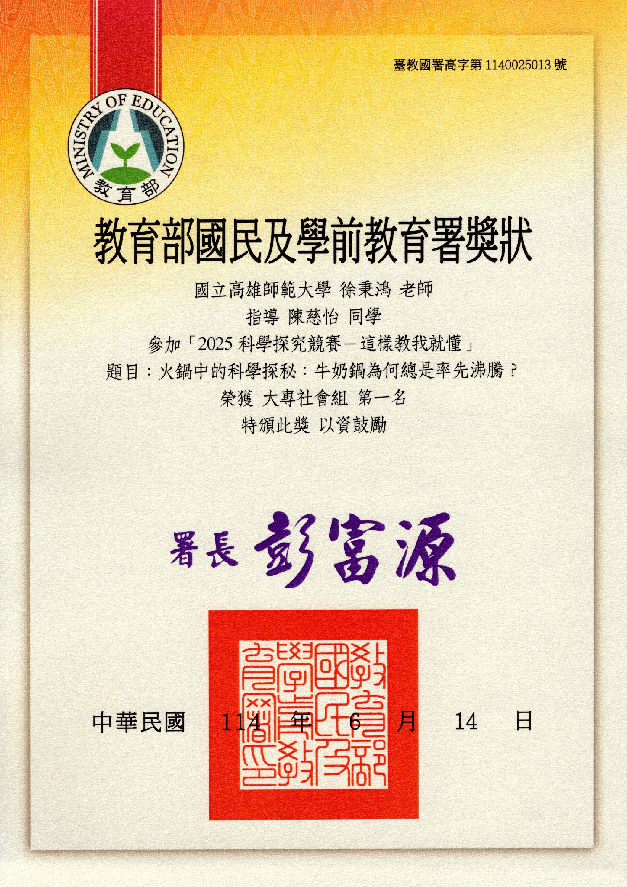
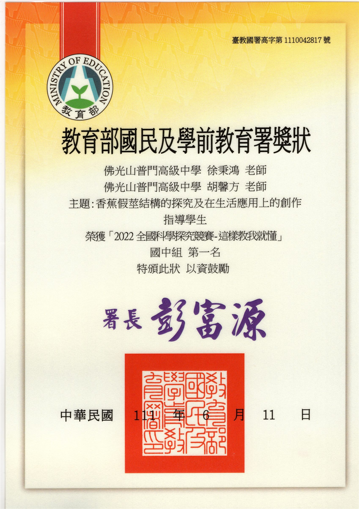
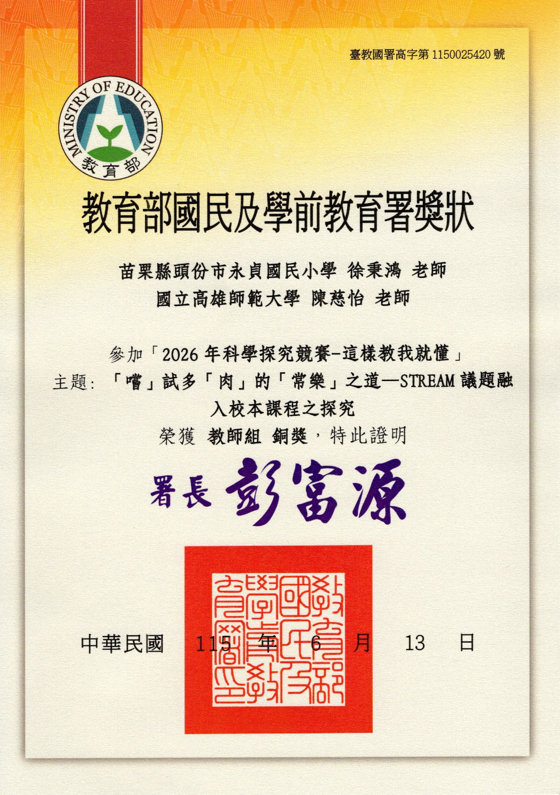

🏆 🥇 2025 全國科學探究競賽 全國第一名（金獎）· 2022 全國科學探究競賽 全國第一名（金獎）
科學探究與實作 × 5E探究模式 × TSSCI核心期刊發表
以生活為起點的探究奇蹟：全國科學探究競賽指導與獲獎歷程
從香蕉假莖仿生到火鍋防溢研究：連續榮獲 2 屆全國第一名金獎之探究教學實踐
📖 專題設計緣起與核心精神
徐秉鴻老師深耕科學探究與實作教學，引導學生從餐桌日常生活（吃火鍋溢鍋現象）到農產廢棄物（香蕉假莖結構）提出問題、建立假說並進行嚴謹實驗驗證。連續指導團隊在國教署全國科學探究競賽奪下 2 屆全國第一名金獎，並將教學歷程轉化發表為 TSSCI 核心期刊第一作者論文！
🌍 核心素養與聯合國永續指標 (SDGs) 對應
探究精神 1
5E 探究教學模式深化
參與 (Engage)、探索 (Explore)、解釋 (Explain)、精緻化 (Elaborate)、評鑑 (Evaluate) 環環相扣。
探究精神 2
生活取材與循環永續
將農業廢棄之香蕉假莖轉化為吸水保水生活仿生材，兼具環保減塑效益。
探究精神 3
教學成果學術理論轉化
榮登國內科學教育最高等級 TSSCI 核心期刊《科學教育學刊》，展現理論與教學相長。
🧩 核心模組與教學實踐架構
戰績一：2022 全國科學探究競賽 全國第一名（金獎）
香蕉假莖結構的探究及在生活應用上的創作
指導普門中學學生團隊，針對旗山香蕉採收後大量廢棄的假莖展開顯微觀察與拉力實驗，發現其蜂窩狀多孔纖維結構具有優異吸水與減震特性，研發出環保鞋墊與生活吸震材，獲國語日報、人間福報全版頭條專題報導！
戰績二：2025 全國科學探究競賽 全國第一名（金獎）
吃火鍋也能做科學研究？湯底選對不怕溢鍋
指導大專社會組團隊，以生活圍爐吃火鍋常見的『沸騰溢鍋』為研究主題，透過高溫流體黏度、表面張力與氣泡成核機制量測，找出避免溢鍋的最佳食材順序與湯底配比，獲獎後受邀至教育廣播電臺《青年 Let's Talk》接受全國專訪！
戰績三：2026 全國科學探究競賽 教師組 全國第三名
「嚐」試多「肉」的「常樂」之道—STREAM議題融入校本課程之探究
徐秉鴻老師親自率領永貞教學團隊參賽，將多肉植物抗旱逆境探究與校本心靈韌性課程化為完整探究作品，榮獲全國教師組第三名肯定。
學術高峰：TSSCI 核心期刊論文第一作者發表
《科學教育學刊》第 33 卷第 1 期 (2025)
與指導教授蔡執仲博士共同發表《探討結合STEM議題的5E探究教學模式在設計國中探究與實作課程之研究》，為國中探究與實作課程奠定堅實的教學理論基礎。
📸 教學現場紀實與成果照片（點擊放大檢視）
🔍 科學探究實驗操作與數據量測現場

🔍 2025 全國科學探究競賽－指導大專社會組【全國第一名金獎】獎狀

🔍 2022 全國科學探究競賽－指導普門中學團隊【全國第一名金獎】獎狀

🔍 2026 全國科學探究競賽－教師組【全國第三名】獎狀